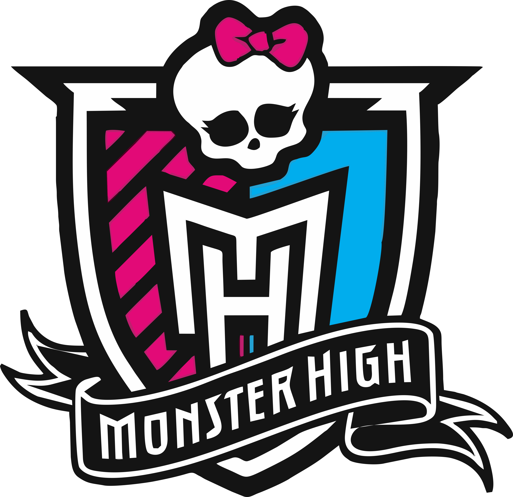
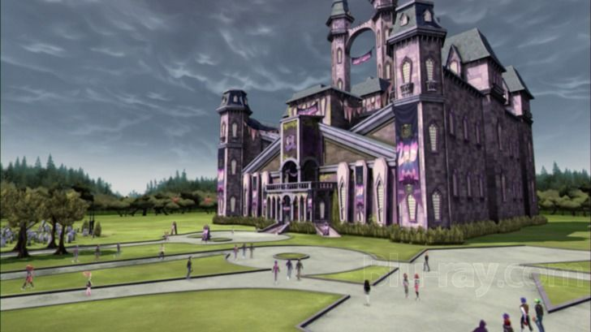

|  |
entre outros, são amigos e frequentam a mesma escola especial, chamada Monster High. Onde mais você pode assistir a aulas como Mad Science, Home Ick e Dragonomics? Mas as aulas não são o que tornam o Monster High especial; são os estudantes fangásticos! Alunos Monster High vêm de todas as esferas da vida. De fantasmas e lobisomens a vampiros e monstros marinhos (e mais!), Todos são bem-vindos em Monster High. Monster High é um lugar onde os estudantes abraçam e celebram o que os torna diferentes. Nossos alunos também aceitam seus amigos e todas as suas qualidades únicas, porque é disso que se trata a verdadeira amizade. |